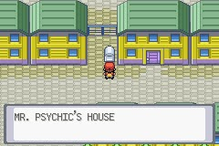
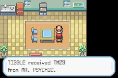
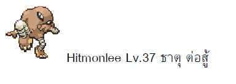
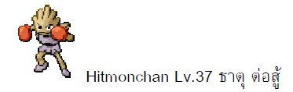
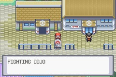
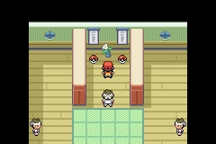

บทที่ 19 / 29
ยามาบูกิซิตี้<Saffron City>
❖
พอมาถึงเรายังไม่สามารถเข้ายิมได้ ให้เราสำรวจรอบๆก่อนเข้าบ้านทางขวาล่างของเมือง <Mr.Psychic’s House> คุยกับคนข้างใน จะได้ TM29 Psychic


จากนั้นให้ขึ้นไปทางเหนือของเมือง จะเห็นยิมอยู่2ยิม ให้เข้ายิมซ้าย เข้าไปสู้กับ Karate Masterที่อยู่ข้างในสุด


เมื่อชนะเขาจะให้เราเลือกโปเกมอนตัวใดตัวหนึ่งที่อยู่ข้างหลัง ระหว่าง(จากซ้ายไปขวา) Hitmonlee และ Hitmonchan เลเวล25


เราจะต้องสู้กับทีมร็อคเก็ตก่อน ให้เราเข้าไปตึกสูงๆ(ที่สุดในเมือง) ตรงกลางเมือง